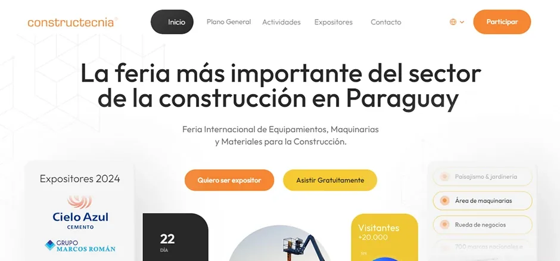
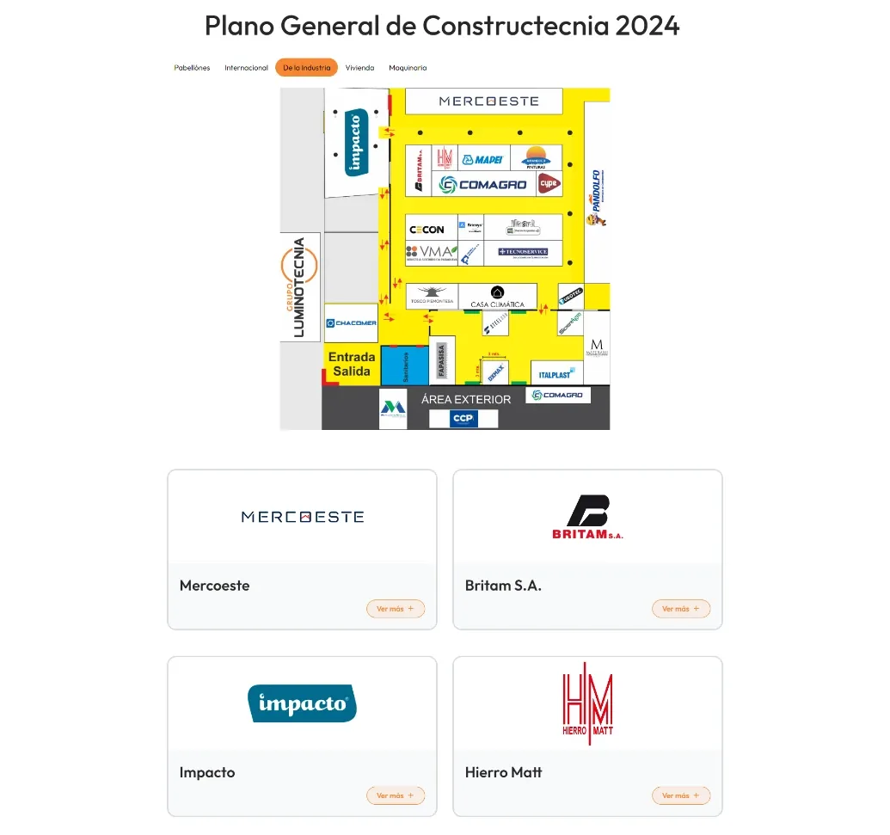
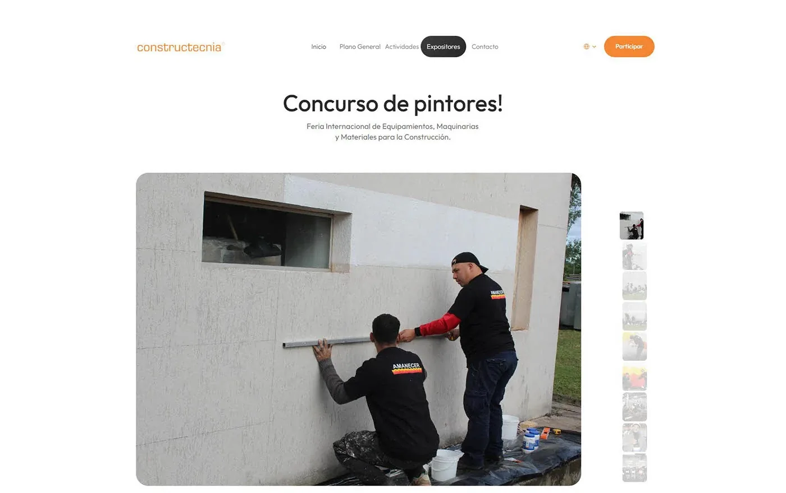

Proyecto · 04 · Sitio web de evento
Constructecnia
El sitio web de la mayor feria de la construcción de Paraguay, diseñado y desarrollado para su edición 2024.
En Grupo Paraguay Eventos & Emprendimientos diseñé y desarrollé el sitio web de Constructecnia 2024, una feria de cinco días con 25.000 visitantes, y lo administré junto con el sitio de la empresa.
Un sitio para visitantes y expositores
La feria necesitaba un sitio que funcionara para dos grupos a la vez, empresas que decidían si exponer, y visitantes que solo querían saber cuándo, dónde y qué había. La página de inicio responde a los dos sin hacer scroll, con las fechas y el lugar, los expositores confirmados y dos caminos claros, ser expositor o ir gratis.
Visitantes en la feria 2024
Días de feria, del 22 al 26 de mayo
Sitios que administré, este y el de la empresa

Encontrá un stand, encontrá una charla
Una feria es un lugar grande para recorrer. El plano permite a los visitantes filtrar por pabellón (industria, vivienda, maquinaria, internacional) y conecta cada stand con la ficha de su expositor. La página de actividades lista cada taller y charla día por día, con el horario, la sala y quién habla.


Un sitio que siguió el ritmo del evento
Cuando se abrieron las puertas, el sitio tenía que cambiar tan rápido como la feria. Construí páginas de transmisión en vivo, una galería de fotos para momentos como el concurso de pintores y un feed con las últimas publicaciones de Instagram y Facebook, para que el inicio siempre mostrara lo que pasaba ese día.


Que los números elijan el próximo cambio
Trabajé con el equipo de marketing y usé Google Analytics para decidir qué cambiar en el sitio, con un objetivo en mente, mantener al público interesado antes y durante la feria.
Los sitios de eventos viven contra reloj
Todo se construye hacia cinco días, y después el contenido cambia cada hora. Me enseñó a diseñar páginas que se actualizan rápido mientras el evento está en marcha. Los dos sitios fueron rediseñados desde entonces; las pantallas que se ven acá son la versión que diseñé y lancé.


Construyamos algo que valga la pena lanzar
Briefs, colaboraciones o una consulta rápida. Leo todo y suelo responder en un par de días hábiles.